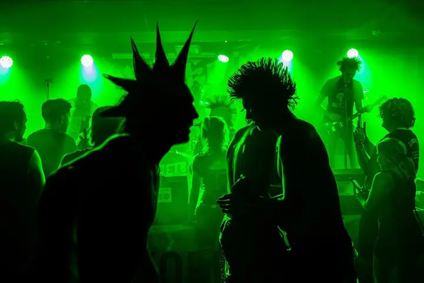
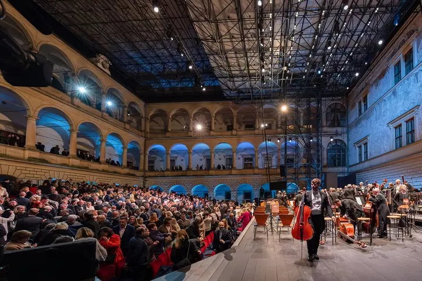
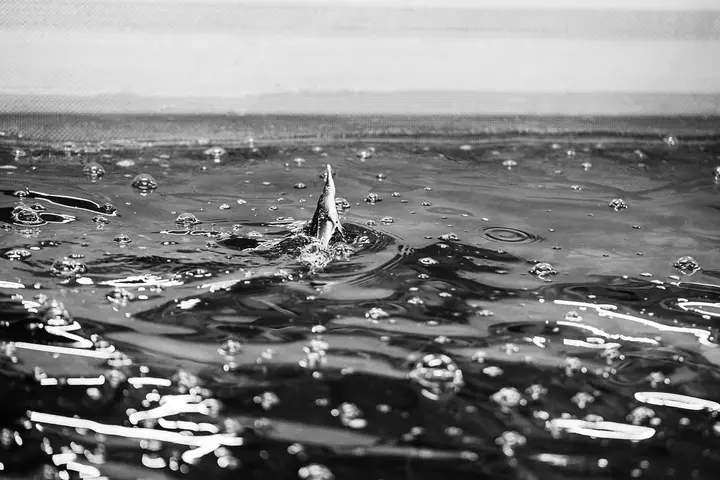
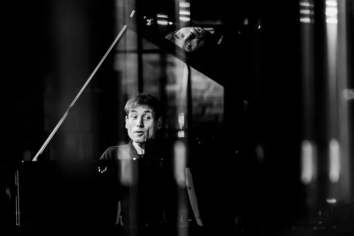
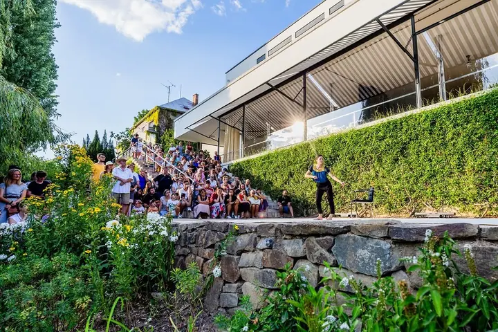
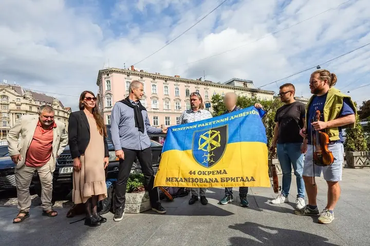
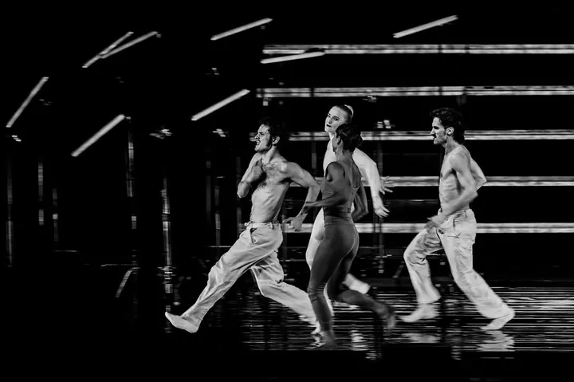
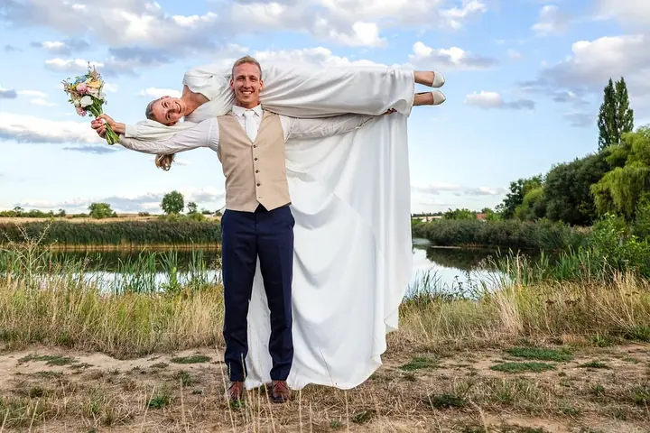

01 / 04
Reportáže
Dokumentuji osobní příběhy i ty, které hýbou světem. Fotím pro redakce, firmy i neziskové organizace, doma i v zahraničí.
Zeptat se na termín→







Reportáže o lidech, zblízka a bez pózování
Zeptat se na termín →(01) Ahoj
Jmenuji se Majda Slámová a jsem reportážní fotografka na volné noze. Miluju lidi, hory a pohyb , za reportážemi jezdím nejraději na východ. Stejně ráda ale fotím svatby a rodiny v Brně, v Praze i kdekoliv jinde.
1 353lidí sleduje mou práci na Instagramu
251příspěvků s fotkami a příběhy
(02) Co fotím
01 / 04
Dokumentuji osobní příběhy i ty, které hýbou světem. Fotím pro redakce, firmy i neziskové organizace, doma i v zahraničí.
Zeptat se na termín→02 / 04
Svatební den vnímám jako reportáž: nenápadně sleduji dění a zachycuji emoce i drobná gesta. Novomanželské portréty vedu přirozeně a bez zbytečného pózování.
Zeptat se na termín→(04) Postup
Od první zprávy po hotovou galerii.
Krok 1 z 4
Ozvěte se e-mailem nebo telefonem, co plánujete a kde. Domluvíme termín a vyberete si balíček, který vám sedí.
Krok 2 z 4
U svatby se předem potkáme online nebo osobně. Probereme vaše představy, abyste v den svatby nestáli před cizím člověkem.
Krok 3 z 4
Pohybuji se nenápadně a sleduji, co se děje. Portréty vedu přirozeně, ať si focení užijete jako chvíli klidu.
Krok 4 z 4
Pečlivě vyberu nejlepší fotografie, citlivě je upravím a předám vám je v online galerii.
Nejraději jsem tam, kde se něco opravdu děje.
(05) Za objektivem
Fotím na volné noze a nejvíc mě baví reportáž. Mým prvním velkým úspěchem bylo ocenění poroty na Czech Press Photo 2012, v roce 2015 jsem získala hlavní cenu v soutěži Brněnský sport v objektivu.
Od roku 2016 spolupracuji s ekologickou organizací Arnika na zahraničních projektech a s redakcí Voxpot, které pomáhám tvořit vizuální podobu. Fotila jsem při požáru Českého Švýcarska, v zapadlé vesnici v Bosně i na Ukrajině sužované válkou. Česko, Ukrajina, Kazachstán, Bosna, Nepál, Gruzie.
Jsem ráda za každou svatbu, kterou můžu další den proložit focením konference. Ke svatbám i rodinám přistupuji stejně jako k reportáži: nenápadně, s citem a bez zbytečného aranžování. Nejčastěji fotím v Brně a Praze, ale ráda za vámi přijedu kamkoliv, klidně vlakem.
Majda
Majda Slámová · Reportážní a svatební fotografka
Základní balíček (2–3 hodiny, 100 fotek) stojí 6 000 Kč, standardní (6–9 hodin, asi 300 fotek) 15 000 Kč a exkluzivní (12–16 hodin, asi 500 fotek, fotokniha a černobílé verze) 20 000 Kč.
Cestu autem účtuji 6 Kč/km. Ráda ale cestuji vlakem, a pokud se k vám dá dojet vlakem, dopravu si neúčtuji.
Rodinné, párové, těhotenské nebo dětské focení trvá obvykle 1–2 hodiny a stojí 2 500 Kč. Dostanete 50 upravených fotek v online galerii.
Nejčastěji v Brně a Praze, ale jezdím po celé České republice a fotím i v zahraničí.
(07) Kontakt
Napište pár vět o tom, co si představujete, a termín, který se vám hodí.
majdafoto@gmail.com